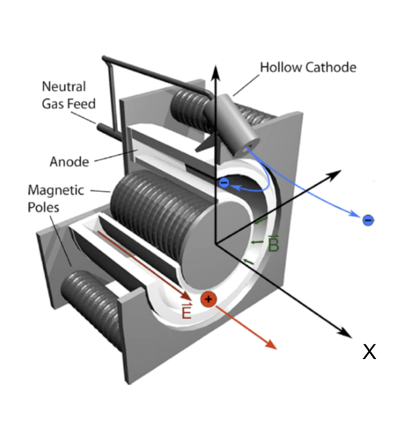
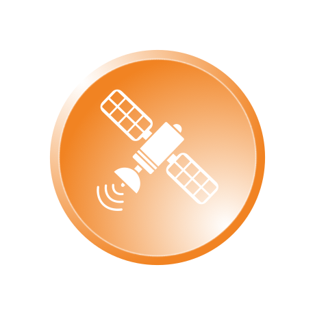
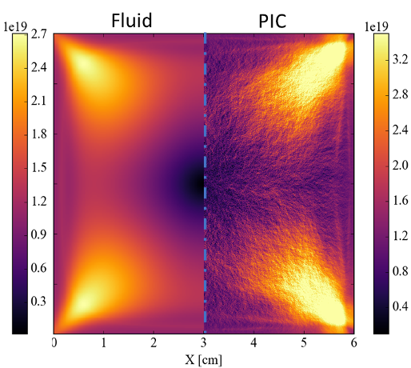

HPC@Maths : Un modèle inédit pour accélérer la recherche et ses applications

Plan
- Évolution des architectures, des mathématiques et des algorithmes
- Innovation scientifique et technologique : illustrations
- L’Initiative HPC@Maths et son impact à l’X


Une complexité à tous les étages
- SIMD
- NUMA-aware
- Carte accélératrice (GPU, FPGA, …)
- Noeuds de calcul interconnectés
Mémoire non unifiée
Une grande variété d’outils
- OpenMP
- Cuda
- MPI
- OpenAcc
- …
Il est maintenant indispensable de connaître l’ensemble des composants et leurs interactions pour tirer partie des ressources mises à disposition.
L’expertise demandée est devenue complexe et les choix nombreux.
Evolution des méthodes mathématiques
Progression parallèle à la loi de Moore
- Un exemple : résolution de système linéaires creux
- Illustration issue d’une réflexion de la société SIAM en 2001 sur le domaine émergeant “Computational Science and Engineering”
- Valable jusque vers 2005 puis saturation progressive sur les sujets “classiques” de la discipline
Emergence de nouvelles approches
- Depuis 2010 changements de paradigmes et solutions innovantes en analyse numérique → ruptures
- HPC : simuler des problèmes de tailles importante sur des architectures classiques (génie biomédical)
- Exemple : adaptation en temps et en espace (sép. d’opérateur pour intégrer la dynamique en temps) et contrôle d’erreur
Passage à un nouveau chapitre de l’analyse numérique depuis 2010


Innovation
Se situe à l’interconnection entre :
- Contribution aux nouvelles approches mathématiques, émergence
- Nouvelles architectures de calcul et techniques d’implémentation
- Enjeux de l’innovation scientifique et technologique = réseau de collab. avec d’autres disciplines et entreprises


Propulsion électrique


Physique complexe fortement multi-échelle
Enjeux
- Couche limite aux parois (gaine) détermine la corrosion et ainsi la durée de vie des propulseurs - Phénomène d’instabilités doivent être reproduits
- Modélisation d’une physique incluant un large spectre espace/temps (10cm/100𝜇m, 10𝜇s/0.1ns). - Simulation abordable et prédictive
Modèles pertinents et outils numériques fiables et efficaces
Défis
- Extraire une hiérarchie de modèles mathématiques simples isolant chaque difficulté (non-linéarité, régimes asymptotiques)
- Présence d’échelles multiples (interactions électrostatiques, faible masse des électrons) introduit de la “raideur” numérique
J.P. Boeuf (2017) J. Appl. Phys.

\[ \begin{cases} \lambda^2_D = \displaystyle\frac{\epsilon_0 k_b T_e}{n_e q_e^2} \\\\ \omega^{-1}_{pe} = \displaystyle\sqrt\frac{m_e \epsilon_0}{n_e q_e^2} \end{cases} \]
Limites asymptotiques
dans certaines zones
Des phénomènes microscopiques génèrent des effets macroscopique, instabilités ou couches limites, et doivent être pris en compte et résolus de manière précise dans les simulations
Approche cinétique au niveau mésoscopique et méthode PIC trop coûteuses
→ hiérarchie de modèles fluides - méthode numérique clef
Méthodes asymptotic-preserving : a game-changer
Méthodes numériques classiques
Erreur de consistance et contrainte de stabilité \[ err = \mathcal{O}\left(\frac{\Delta x}{\color{red}\epsilon}\right) \quad \Delta t \leq \color{red}\epsilon \Delta x \] \[ \color{red}\epsilon = 10^{-4} \quad \Delta x \leq 10^{-6} \quad \Delta x \leq 10^{-10} \]
1 millions de cellules et 10 milliards d’itérations en 1D
Nouvelle gamme de méthodes
- Méthode uniformément asymptotic-preserving (AP) d’ordre élevé
- Analyse détaillée des propriétés des algorithmes obtenus (innovation 2022, PhD L. Reboul)
- Accélération de plusieurs ordres de grandeurs (3 à 4)
Equation hyperbolique de la chaleur
\[ \begin{align} \partial_t E + \frac{1}{\epsilon} \partial_x F &= 0 \\ \partial_t F + \frac{1}{\epsilon} \partial_x E & = -\frac{\sigma}{\epsilon^2}F \end{align} \]
Innovation au niveau scientifique
Contribution académique, PhD L. Reboul
- Première simulation d’instabilité dans les plasmas froids à basse pression partiellement magnétisés avec un modèle fluide grâce à la précision et aux propriétés du schéma
- Comparaison avec méthodes PIC (première académique)
- Capture les instabilités précisément et de manière fiable
Nouvelles méthodes asymptotic-perserving = Rupture
Précision augmentée et accélération d’un facteur 100 par rapport aux techniques classiques
- Capacité de faire de l’adaptation de maillage (propriétés AP du schéma) pour accélérer le calcul et diminuer la trace mémoire en multi-D. Développement dans le code de calcul communautaire Open Source SAMURAI
densité électron
flux électron
Vers les applications scientifiques et industrielles
Performance de codes et géométries réalistes
- Adaptation dynamique de maillage (AMR/MR) / contrôle d’erreur
- Parallélisme massif
- Codes communautaires (collaboration)
- CanoP (Adaptive Mesh Refinement, AMR)
- SAMURAI (Multi-résolution, algèbre d’intervalle)
Transfert vers les autres disciplines et les industriels
- Académiques (physique des plasmas, physique solaire)
- Industriels et instituts de recherche
Samurai
Outil pour un ensemble d’applications
- Physique des plasmas (propulsion électrique, prédiction du temps solaire, electron transpiration cooling…)
- Ecoulements diphasiques (propulsion liquide, propulsion aéronautique, moteurs à injection directe, chasse au lancement d’un missile)
- Simulation numérique directe des piles au lithium
Innovation
- Nouvelle structure de données basée sur une algèbre d’ensembles
- Facilité d’implémentation de nouveaux schéma (indépendant de la gestion dynamique du maillage) permettant de créer un écosystème pour les applications
- Mise en place de nouvelles approches (ordonnancement de tâches) pour le parallélisme
Code communautaire Open Source
https://github.com/hpc-maths/samurai
Même code pour les deux applications présentées


HPC@Maths

Mise en place depuis 2017 avec l’aide de la Fondation de l’X
Impact important sur l’écosystème enseignement-recherche à l’X
Mésocentre de Calcul et de données
Ecole polytechnique - IP Paris
- Opérationnel depuis été 2021
- 2000 coeurs de calcul pour communauté de laboratoires initiateurs
- Montée en puissance à 3000 coeurs et nouveaux partenaires
- Communauté autour des méthodes numériques de nouvelle génération et leur implémentation
- “Computational Science” - Collaboration interdisciplinaire
Création de l’Unité de Service IDCS
- Créée en mai 2020 à l’École polytechnique
- Inspirée de ce qui se fait dans les grandes universités (Stanford, EPFL)
- Ensemble d’ingénieurs ASR et CALCUL en soutien aux grands projets d’infrastructure informatique de l’École et IP Paris
- Réactivité sur évolution des infrastructures et Data Center - Soutien à la communauté
- Vocation à devenir une Unité d’Appui à la Recherche (CNRS)
Effort important mené avec succès sur ces réalisations
avec un fort soutien de l’École polytechnique / IPP
Initiative HPC@Maths a eu un rôle clef
Enseignement

Formation mise en place - interaction avec PME & Développement Pédagogie
Conclusion
Positionnement pertinent au coeur de l’innovation
- Expertise Mathématique (CMAP)
- Expertise Informatique (Groupe d’ingénieurs de recherche experts en calcul - développeurs)
- Réseau de collaborations sur les divers axes scientifiques et entreprises
- Production de logiciels open-source
Création d’un écosystème - École et IP Paris
Projet en forte progression
Besoin de renforcer l’écosystème en particulier l’équipe d’Ingénieurs de Recherche experts en Calcul
Remerciements
Etudiants, ingénieurs et collaborateurs
- Doctorants et post-doctorants
- Ingénieurs Calcul, Valorisation et Project Manager
- Collaborateurs au sein du CMAP et ailleurs
- Collaborateurs industriels, PME, startup
Ecole polytechnique - IP Paris
- Gestion Laboratoire CMAP
- Unité IDCS
- Pôle teaching and learning center
Fondation de l’X
- Direction de campagne
- Toute l’équipe de la Fondation
- Grand donateur pour son écoute, son soutien et ses conseils